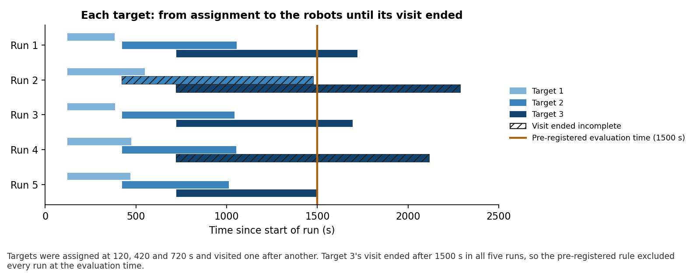
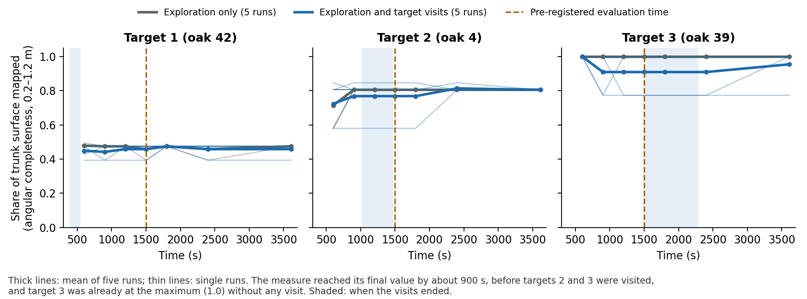
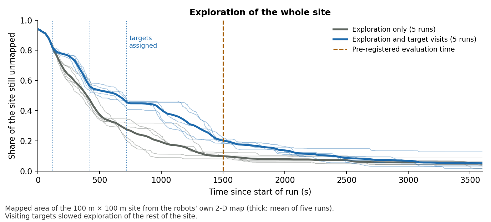

Multi-Robot Active Cooperative Perception
Exploitation for map quality: an experiment that gave no result
Does sending two exploring robots to look closely at chosen trees give a better map of those trees?
Ten runs compared exploration only with exploration plus visits to three target trees. The pre-registered test could not be evaluated, and a later analysis found no improvement. The reasons lie in how the experiment measured the map, not in the robots. They shaped the camera experiment that followed.
The experiment
- Type
- Simulated experiment (Ignition Gazebo, Fortress release), run on 21–22 September 2026
- Site
- Flat oak forest; the robots explored a 100 m × 100 m area.
- Robots
- Two Clearpath Husky robots with 3-D lidar, sharing their maps over an ideal radio link.
- Conditions
- Exploration only (5 runs) and exploration with target visits (5 runs), identical in every other setting. Each run lasted 3600 s.
- Targets
- Three oaks (42, 4 and 39), assigned at 120, 420 and 720 s. For each, the robots drove to three viewpoints 120° apart, 3.8 m from the trunk, and paused at each.
- Measure
- Angular completeness: the share of a trunk's circumference, between 0.2 and 1.2 m above the ground, for which the combined map holds surface points. It was computed afterwards from the recorded lidar data, against the true tree positions.
- Pre-registered test
- Mean completeness of the three targets at 1500 s, visits against no visits. A run with visits counted only if all three targets had been visited by that time.
Results
No improvement was found. At the pre-registered time of 1500 s, no run with visits met the rule that all three targets had been visited, so the test had no data. At 2400 s, chosen after seeing this, four runs qualified. Their targets were mapped slightly less completely than without visits (0.738 against 0.755), a difference within the run-to-run spread.
| Analysis | Runs (visits / none) | Target completeness (visits / none) | Difference |
|---|---|---|---|
| Pre-registered, 1500 s | 0 / 5 | – / 0.755 | no result |
| After the fact, 1800 s | 3 / 5 | 0.735 / 0.760 | −0.025 (p = 1.00) |
| After the fact, 2400 s | 4 / 5 | 0.738 / 0.755 | −0.017 (p = 0.95) |
| Gain on targets minus gain on nearby trees, 2400 s | 4 / 5 | – | −0.002 (p = 0.53) |
| Taller trunk band (0.2–4.0 m), 2400 s, all runs | 5 / 5 | 0.876 / 0.873 | +0.003 |
p values: one-sided exact permutation tests (visits better than none). One run with visits never qualifies: its second target received no viewpoint pause with a clear line of sight. In two of the four qualifying runs the targets' values equal the no-visit values exactly; the whole difference comes from one run.



Why it did not work
- The evaluation time was too early. The plan assumed each visit would end within about 300 s. Because visits were done one after another, target 2 took 600–1066 s and target 3 took 791–1576 s from assignment.
- The measure had stopped responding. Normal exploration had already brought the targets to their final completeness by about 900 s. Target 3 was at the maximum of 1.0 with no visit and target 2 at 0.8, so only target 1 had room to improve, and it did not.
- The measure was coarse. With 0.2 m map cells, completeness takes only a few distinct values per tree, and the number of mapped points on a trunk varies by about 10 % between readings as the map updates, in both conditions. A second measure, the observed share of the space around the trunk, was about 0.99 in both conditions throughout.
- The cost test could not be decided. The planned limit on lost exploration (0.0145) was smaller than the smallest difference five runs per condition can detect (about 0.098).
What followed
The camera experiment changed each of these: the robots explore first and visits start only when exploration is done; targets are drawn at random, with undrawn trees as the comparison; and the measure is whether a camera sees small lesions on the bark, which exploration alone rarely achieves. With those changes, visits made a clear difference.
Limitations
- Five runs per condition, one forest, three fixed targets.
- The analyses at 1800 and 2400 s were chosen after the pre-registered test failed and are exploratory.
- The maps are from lidar only, at 0.2 m resolution; finer surface detail was not measured here.
- Two earlier runs that stopped at about 490 s, because of an exploration stop setting meant for another experiment, were discarded before the campaign and are not analysed.
Code and data
Branch exploitation_experiment of kalhansb/hmr_explo, under experiments/exploitation_map_gain/: the full write-up in READOUT.md, analysis output in analysis/, per-run scores and logs in cells/. The plan is ws/src/exploitation_map_gain_experiment.md. The recorded lidar data (about 2 GB per run) are not in the repository.